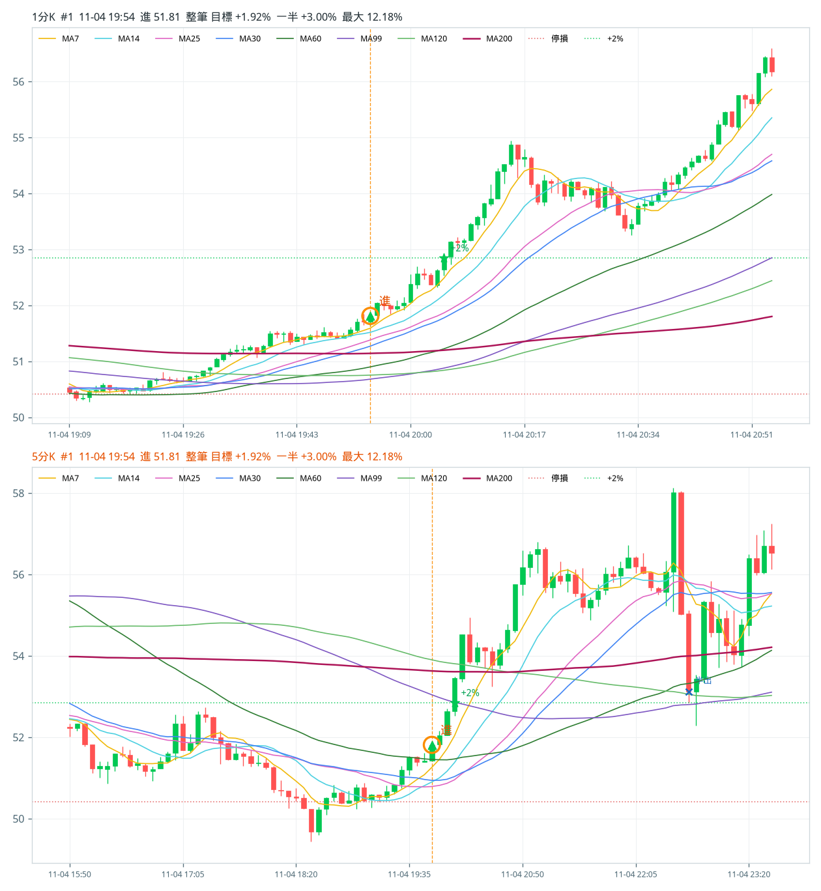

SOXSUSDT 反向
+3.00%
1 筆 目標 1/1 整筆 +2% 扣費 +1.92% 一半 +2% 扣費 +3.00%
11-04 19:54 進 51.81
整筆 目標 +1.92% 一半 +3.00% 最大 12.18%
固定 +1 點 整筆 +0.96 一半 +1.54
台北 2026-10-28 00:33 → 11-27 00:33。只跑 SOXS、SOXL。進場條件跟全股票那次相同。百分比是等比例 +2%、扣來回 0.08% 手續費。固定 +1 點寫在每一筆下面。
K 線不夠長、算不出 15 分 MA200 的有 0 檔。
1 筆 目標 1/1 整筆 +2% 扣費 +1.92% 一半 +2% 扣費 +3.00%
11-04 19:54 進 51.81
整筆 目標 +1.92% 一半 +3.00% 最大 12.18%
固定 +1 點 整筆 +0.96 一半 +1.54
這 30 天沒有同時滿足進場條件的 K 棒。